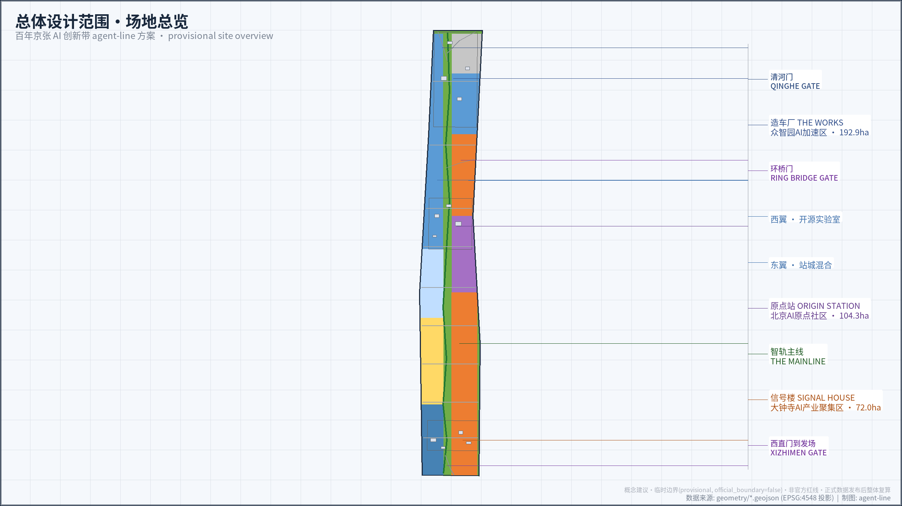
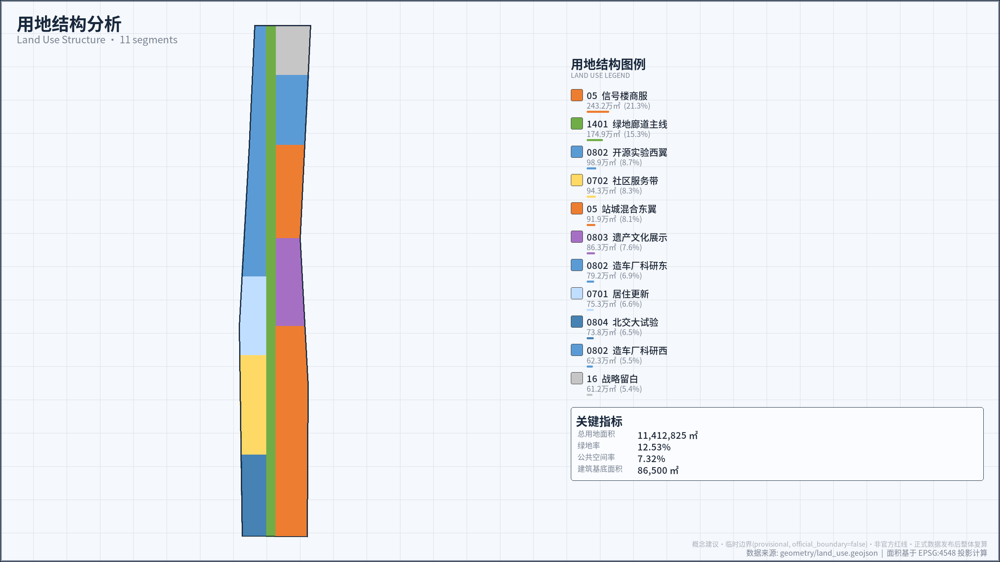
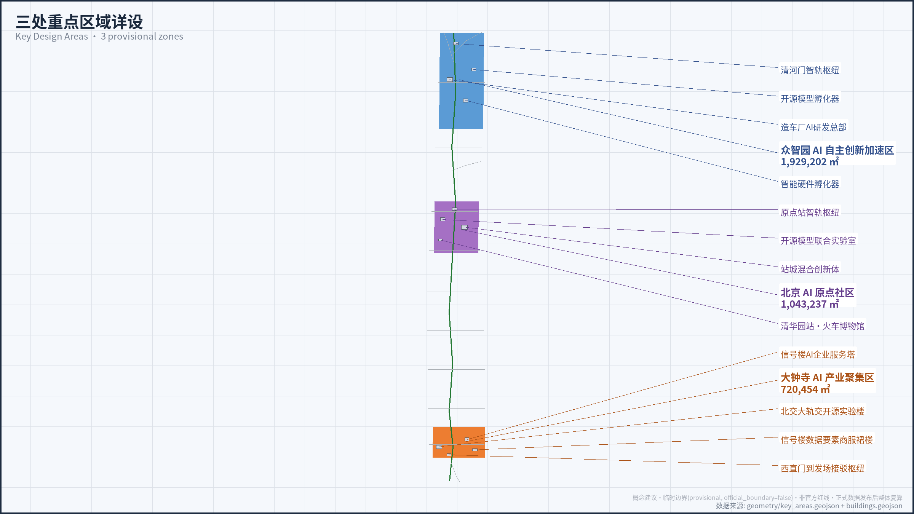
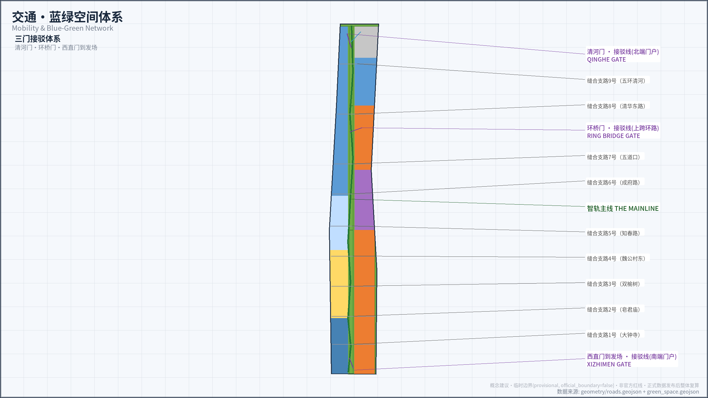
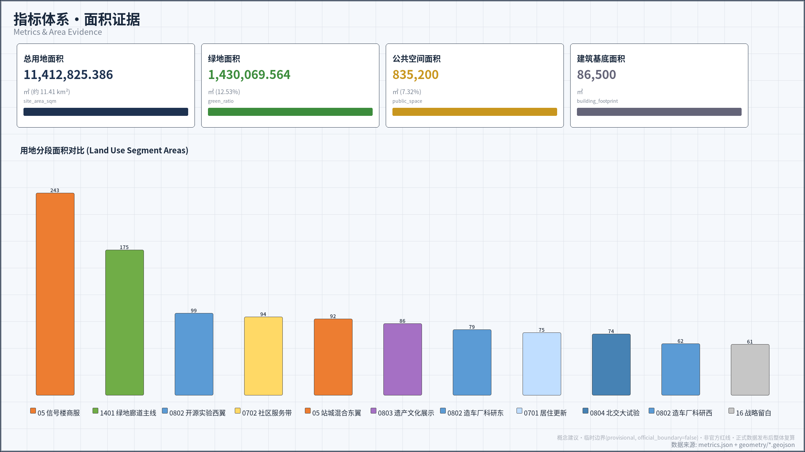

核心指标 DATA
三个核心空间指标来自 geometry GeoJSON 投影复算，与 metrics.json 保持一致。
总览地图 三层范围
三层范围递进：统筹研究范围（43.6 km²）→ 总体设计范围（11.41 km²）→ 重点区域（368.4 ha），将产业判断、城市更新与片区设计绑定到图层与指标。

统筹研究范围 43.6 km²
面向北五环至北京北站全域，提出 AI 产业生态、三区两翼协同、未来城市形态和文化叙事框架。
- AI 创新链与人才链
- 全球案例转化机制
- 品牌命名与传播
总体设计范围 11.41 km²
provisional 边界内组织城市更新、用地结构、交通市政与京张遗址公园活力带。
- 控规深度城市设计
- 更新项目清单
- 蓝绿慢行系统
重点区域 368.4 ha
三处重点片区开展详细设计：造车厂·众智园（192.1 ha）、原点站（104.3 ha）、信号楼·大钟寺（72.0 ha）。
- 功能业态与建筑更新
- 公共空间与交通组织
- 实施风险说明
用地分区 11 段
按 provisional 边界划分 11 段用地，总用地面积 11,412,825 m²。用地编码参照现行控规分类，正式数据发布后整体复算。

| 段名 | 面积 m² | 编码 | 功能定位 |
|---|---|---|---|
| 造车厂西 | 622,630 | 0802 | 众智园产业研发西翼 |
| 造车厂东 | 791,662 | 0802 | 众智园产业研发东翼 |
| 北端留白 | 611,918 | 16 | 预留弹性用地 |
| 原点站西翼 | 988,724 | 0802 | 产业转化与开源社区 |
| 原点站东翼 | 919,128 | 05 | 商业服务复合 |
| 清华园站遗产区 | 863,190 | 0803 | 铁路遗产保护与文旅 |
| 智轨主线绿廊 | 1,748,902 | 1401 | 遗址公园绿廊与慢行 |
| 居住 | 753,001 | 0701 | 人才居住配套 |
| 社区服务 | 942,997 | 0702 | 社区公共服务 |
| 北交大试验场 | 738,193 | 0804 | BJTU OPEN RAIL LAB |
| 信号楼商业区 | 2,432,479 | 05 | 大钟寺商业与 AI 聚集 |
重点区域 三站
三处重点区域不复制同一种园区模式：造车厂造车、原点站立标、信号楼发车。

造车厂 THE WORKS · 众智园
192.1 ha — 花园型自主创新街区。国家平台、产业展示、清河文化、对外交通和低碳交往空间。
- AI 自主创新加速区
- 众智园 192.1 ha
- 清河门到发场
原点站 ORIGIN STATION
104.3 ha — 近校型成果转化街区。高校源头创新、开源社区、人才服务、拆改留和站点一体化。
- 北京 AI 原点社区
- 环桥门节点
- 人字道岔地标
信号楼 SIGNAL HOUSE · 大钟寺
72.0 ha — 城市型智能经济街区。领军企业、智能体新业态、商业服务、绿地复合利用。
- AI 产业聚集区
- 西直门到发场
- 大钟寺地标
交通慢行 三道一绿
三条慢行道（铁路遗产步道、科创骑行道、社区漫步道）串联遗址公园绿廊，九条缝合支路打通南北。

三道一绿
铁路遗产步道、科创骑行道、社区漫步道三条慢行线路，沿智轨主线绿廊（1,748,902 m²）连续贯通。
三门
清河门（北入口）、环桥门（中段转换）、西直门到发场（南入口）三处到发场节点。
九条缝合支路
九条东西向缝合支路打通遗址公园与两侧街区，消除铁路遗址对城市肌理的切割。
蓝绿公共空间 12.53%
蓝绿公共空间比率 12.53%（green_ratio），以智轨主线绿廊为骨架，串联遗址公园、社区花园与街角绿地。
京张遗址公园绿廊
智轨主线绿廊 1,748,902 m²，承载遗产步道、AI 地标与公共活动空间。
开源水鹤补给站
铁路遗产活化利用节点，结合补给功能与开源成果展示。
里程碑纪念体系
里程碑 1909、人字道岔、开源水鹤三处朝圣地标，串联百年铁路文化叙事。
建筑 12 概念基底
12 个建筑概念基底表达可逆更新界面，不代表现状建筑、拆改留判断或规模许可。拆改留方案待正式控规与产权资料确认。
造车厂片区
3 处概念基底：创新工坊、产业展示中心、低碳办公集群。保留工业遗存肌理。
原点站片区
4 处概念基底：开源社区中心、人才公寓、转化客厅、铁路遗产展馆。
信号楼片区
5 处概念基底：智能体总部、数据要素剧场、商业综合体、算力驿站、创新市集空间。
拆改留声明
12 个建筑图形仅表达概念更新界面，不代表现状建筑、拆改留判断或规模许可。拆改留方案待正式控规指标与产权资料确认后整体复算。
更新项目 三期
从示范段到成线再到成网，三期递进实施。
一期 · 示范段
造车厂核心区启动，完成智轨主线绿廊示范段、开源水鹤补给站和创新工坊基底改造。
二期 · 成线
贯通智轨主线 9km，完成三站节点、三道慢行与九条缝合支路，串联遗址公园全线。
三期 · 成网
向南北两翼延展，完成售票厅与试车线节点，形成覆盖 43.6 km² 的 AI 创新带网络。
AI 场景 12 节点 · 3 TVS
12 个 AI 场景卡，其中 3 个为测试验证场景（TVS），说明服务对象、空间位置、数据来源与人工复核机制。
指标与证据链 EVIDENCE
核心空间指标、场景规模与专业深化前置条件。

任务覆盖 COMPLIANCE
覆盖公告任务 1.3 / 1.4 / 1.5 与 agent.1 — agent.6，由 compliance_matrix.json 和 standard_matrix.json 支撑。
| 任务编号 | 任务要求 | 覆盖说明 | 状态 |
|---|---|---|---|
| 公告 1.3 | 统筹研究范围产业与未来城市研究 | AI 创新链、人才链、全球案例转化机制 | PASS |
| 公告 1.4 | 总体设计范围城市更新与控规深度城市设计 | 11 段用地分区、交通市政、蓝绿慢行系统 | PASS |
| 公告 1.5 | 三个重点区域详细设计 | 造车厂/原点站/信号楼三站功能业态与建筑更新 | PASS |
| agent.1 | 命名/Logo/视觉规范 | 京张智轨 AGENT LINE 品牌体系 | PASS |
| agent.2 | 5-8 个全球 AI 创新生态案例 | 案例库覆盖交通、遗产、治理等维度 | PASS |
| agent.3 | 10 张以上场景卡 | 12 场景卡，含 3 个 TVS | PASS |
| agent.4 | 3 个以上朝圣地标 | 里程碑 1909 / 人字道岔 / 开源水鹤 | PASS |
| agent.5 | 文化叙事与品牌传播 | 百年铁路文化 → 中关村创新 → AI 新文化 | PASS |
| agent.6 | 长期运营机制 | 三期递进实施、荣誉纪念体系、持续参与循环 | PASS |
自检状态 STATUS
自检通过状态以 self_check_submission.py 输出为准。
自检机制
deterministic validation、spatial review、visual packaging check 与 professional evidence review 必须全部通过。当前页面为离线静态展示页，自检通过状态以 self_check_submission.py 输出为准，本页面不伪造自检结论。
边界状态
provisional geometry: PASS intake only, replace with official polygons before formal professional scoring。使用 provisional 边界时，本页仅支持 intake 展示、讨论和返修，不作为正式专业评分图纸。
来源 SOURCES
方案数据来自官方公告、仓库 site-package、案例库与本地标准库。
官方来源
北京市规划和自然资源委员会海淀分局资格预审公告；brief/site-package/ 结构化任务书；data/source_registry.json 公开资料登记表；standards/references/ 本地标准快照。
案例库与辅助资料
7 个国际 AI 创新生态案例（外部案例只作机制启发）；北京市/海淀区新闻发布；京张铁路遗址公园公开资料；OpenStreetMap 基础现状数据。
假设 ASSUMPTIONS
provisional 边界、控规指标待补、拆改留待产权资料确认等前置条件。
provisional 边界
本页所有空间数据基于 provisional_boundaries.geojson，不作为官方红线、审批或精确面积依据。正式数据发布后整体复算。
控规指标待补
approved FAR controls、容积率、建筑高度等控规指标不在当前 site-package 中，待资格预审文件包确认后补充。
拆改留待产权资料
现状建筑拆改留判断、产权资料、市政管线与工程条件待正式控规和权属资料确认。
精度限制
临时边界精度有限，所有空间指标仅用于 intake 展示、设计讨论和返修，不作为正式专业评分依据。